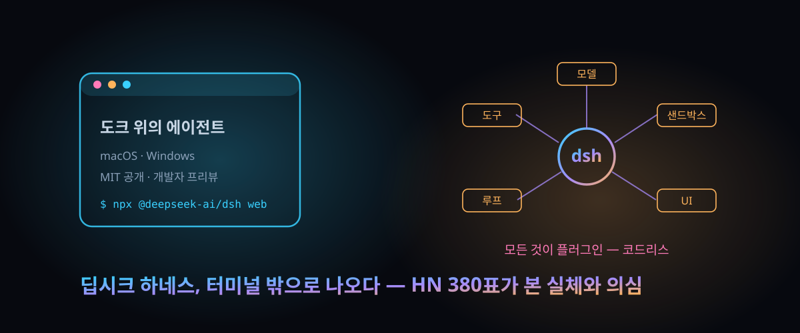

10월 1일 데스크톱 배포, MIT 공개 — 중국발 오픈소스 에이전트 '딥시크 하네스'의 실체와 380개의 반응

결론부터. 터미널로만 굴리던 오픈소스 에이전트를 앱 아이콘 하나로 끌어내린 건 그 자체로 혁신이 아니다. 볼 곳은 따로 있다. '모델·도구·화면까지 전부 플러그인으로 뽑아낸 설계'가 중국발 오픈소스로 처음으로 대중 앞에 섰다.
DeepSeek이 자체 에이전트 런타임 '딥시크 하네스(명령어 dsh)'를 9월 30일(현지) 데스크톱 앱으로 공개했다. 다운로드 페이지에는 Windows 64비트와 Apple 실리콘 맥(macOS 13 이상)이 올라 있고, 해커뉴스에서는 10월 2일 이 소식이 표 380개를 쌓았다.
저장소는 두 달 전 8월에 이미 열려 MIT 라이선스로 공개돼 있었고, 10월 3일 확인 기준 스타 21,248개·포크 24,945개다. 상태표는 여전히 '개발자 프리뷰'. 공식 저장소는 아예 대문자로 "호환성을 깨는 변경이 계속 온다"고 못 박아 둔 상태다.
30초 요약
| 항목 | 내용 |
|---|---|
| 무슨 사건 | DeepSeek의 오픈소스 에이전트 하네스 dsh가 데스크톱 앱(Windows·Apple 실리콘 맥)으로 공개 배포됐다. 터미널 명령만 지원하던 데서 앱 더블클릭 진입로가 열렸다 |
| 핵심 설계 | '모든 것이 플러그인'. 모델·도구·스킬·세션·샌드박스·저장·루프·예약·화면까지 전부 교체 가능한 플러그인으로 구성 (기반 프레임워크 이름은 코드리스) |
| 화제된 기능 | 크리에이터 모드 — 채팅 한 줄로 플러그인을 코딩·설치·검증까지 자율 수행. 제품 페이지 시연은 떠 있는 타이머 플러그인 하나에 5분 24초 |
| 비용·라이선스 | 소스 공개 MIT. 앱 가격표는 없고, 직접 빌려 쓰는 모델 API를 연결하는 '커스텀 모델' 경로에서는 로그인 없이 동작한다 |
| 반응 온도 | 해커뉴스 380표. '관측성과 추가 전용 설계가 진짜 차별점'이라는 찬사와 '어디나 있는 기능, 홍보성 댓글투'라는 의심이 반반 |
| 주의 | 보안 감사를 받지 않은 프리뷰. 코드 실행·플러그인 설치·로컬 파일 접근을 전제하는 도구라 권한과 플러그인 검증이 출발 조건 |
1. 무엇이 터졌나
용어부터 정리하자. '하네스(harness)'는 말 그대로 묶는 장비다. LLM이라는 엔진에 파일 읽기·명령 실행·검색 같은 도구를 매고, 세션을 이어 붙이고, 도구 호출이 폭주하지 않게 고삐를 채우는 계층이다. Claude Code나 터미널형 에이전트라 불리는 것들이 전부 하네스에 해당한다. DeepSeek은 모델 회사다. 그런데 자기 모델을 굴릴 '탈 것'까지 공개로 함께 만들어 두고 있었다는 게 이번 소식의 배경이다.
경위를 시간순으로 밟아 보면 이렇다. 저장소는 2026년 8월 13일 생성됐고, 한동안 '모든 능력이 플러그인'을 선언한 개발자 프리뷰로 개발자만 상대했다. 그러다 9월 30일 데스크톱 앱 소식이 올라 10월 초 전 세계 공개 프리뷰로 일반 사용자까지 문턱을 낮췄다. 웹 화면으로 띄우는 명령은 npx @deepseek-ai/dsh web 한 줄이고, 기본 주소는 로컬 3080번 포트다.
데스크톱 앱이 더한 건 새 능력이 아니라 진입로다. 로컬 파일을 고치고, 백그라운드 작업을 돌리고, 도크(또는 작업 표시줄)에서 바로 깨우는 식이다. 그 전까지 공식 경로는 Node.js를 깔고 터미널에 명령을 쳐야 했다.
2. 왜 대단한가
① '플러그인'의 범위가 화면과 모델 선택까지다
많은 도구가 '확장 기능'을 내세운다. 실체는 도구 목록에 함수를 하나씩 추가하는 수준이다. 하네스의 선언은 과감하다. 모델을 고르는 일, 샌드박스를 정하는 일, 대화 루프 자체, 심지어 화면까지 플러그인으로 취급한다. 설정 파일에서 갈아끼우면 소스 코드를 건드릴 일이 없다. 남들이 올리는 플러그인 저장소에는 dsh-plugin 주제를 달라는 관습까지 문서에 적혀 있다. 생태계 전제를 '플러그인'에 깔겠다는 선언이다.
② 크리에이터 모드 — '만들어 드릴게요'가 시연이 아니라 기본값
제품 페이지에 올라온 실제 로그가 설계 철학을 보여준다. "떠다니는 타이머 플러그인을 만들어줘"라는 한 줄에, 시스템은 플러그인 개발 기술을 불러오고, 구조를 조사해 대상 지점을 정하고, 패키지 정의와 638줄짜리 화면 코드를 작성하고, 설치 명령까지 스스로 돌린다. 데모에 찍힌 소요 시간은 5분 24초. 댓글창의 한 사용자는 "글자 크기 조절 단축키가 없다"는 불만을 같은 방식으로 해결했다. 확대·축소 플러그인을 통째로 만들어 붙였다.
③ 차별점으로 지목된 두 가지 — 관측성과 '추가 전용' 설계
스레드에서 크게 호응한 평가는 성능이 아니라 '투명성'이었다. 모든 프롬프트·응답·도구 호출의 원문을 훑어볼 수 있고, 그런 조회 계층이 로컬에 붙어 있다는 얘기다. 다른 도구에도 있다는 반박이 엇갈렸지만, '기록(트랜스크립트)을 제품의 등뼈로 대한다'는 서술 자체는 양쪽 모두 수긍했다. 다른 한 가지. 대화 내용을 추가 전용으로만 쌓아 캐시 무효화 종류의 버그를 구조적으로 막는다는 평가도 달렸다.
④ 경쟁 구도가 잡히는 순간
영문 기술 매체들은 이 배포를 Claude Desktop·Copilot류와의 정면 대결로 읽는다. 서구권이 구독제 닫힌 앱으로 에이전트를 파는 동안, 중국 회사가 MIT 라이선스 소스 + 데스크톱 앱 + 직접 연결한 모델 API(자사 서버를 거치지 않는 경로)를 동시에 던졌기 때문이다. 개인정보 처리 문서도 이 구조를 뒷받침한다. 외부 모델을 붙여 쓰는 경로에서는 입력이 해당 모델 업체로 곧장 가고 DeepSeek 쪽에 쌓지 않는다고 명시돼 있다.
3. 바로 써먹기
설치 경로는 셋이다. 가장 가벼운 건 웹 화면 기동, 무거운 건 소스 트리 빌드다.
# 웹 화면 (Node.js 필요, 기본 http://127.0.0.1:3080)
npx @deepseek-ai/dsh web
# 브라우저 자동 열기를 끄려면
npx @deepseek-ai/dsh web --no-open
# 소스에서
git clone https://github.com/deepseek-ai/deepseek-harness.git
cd deepseek-harness && pnpm install && pnpm run build && pnpm dsh web데스크톱 앱은 공식 다운로드 페이지(deepseek.com/en/download/)에서 받는다. 도입 여부를 가를 때의 대조표:
| 축 | 딥시크 하네스 | Claude Code·Pi류 터미널 에이전트 |
|---|---|---|
| 진입 | 앱 더블클릭, 또는 실행 한 줄 | 대부분 설치 후 명령줄 |
| 라이선스 | MIT (소스 전체 공개) | 제품별 상이 — 일부 비공개 |
| 모델 | 자사 최신 모델 + 임의 API 연결 | 벤더 종속이 기본, 우회 가능 |
| 확장 방식 | 모델·화면·루프까지 플러그인 교체 | 도구·MCP·스킬 추가 |
| 성숙도 | 프리뷰 — 파괴적 변경 예고 상주 | 상용 안정 운영권 |
사내 도입이라면 순서는 정해져 있다. 코드 실행·파일 수정 권한이 오르는 순간에 대비해 격리 계정과 다룰 저장소 목록을 먼저 제한하고, 플러그인은 설치 전에 코드부터 읽는다. 공식 안내에 '보안 감사를 받지 않은 소프트웨어'라는 문장이 명시돼 있다는 점이 근거다.
4. 해외 반응 쟁점
해커뉴스 스레드(표 380)에서 반복된 축들이다.
① "야수(beast)다" 진영 — 맥 앱으로 갈아탄 사용자들이 설치 즉시 작업 이관을 치렀다. 설정과 작업 공간이 그대로 넘어왔다는 후기가 대표적이고, 한 사용자는 "뉴스 묶음 앱을 RSS 소스 30개 붙여 만들어달라 했더니 50센트 미만으로 만들어냈다"는 성과물을 인증했다.
② "그 정도는 다 한다" 진영 — 위 인증에 대한 답들이 이렇다: '모든 하네스가 그 정도는 한다' '그게 남들과 다른 점을 설명하진 못한다'. 기능 나열로는 차별점이 성립하지 않는다는 태도다.
③ "홍보성 댓글" 의심 — 스레드 곳곳에 '이 정도 찬사는 과장됐다'는 지적이 달렸다. '요즘 2주간 홍보성 스레드량을 보라'는 말과 'GPT-6 스레드를 봐라, 그건 진짜 홍보였다'는 반박이 부딪혔고, 중립 다수설은 "스레드 전체는 냉담한데 찬사 몇 개가 도드라진다"로 정리됐다.
④ '관측성'만은 대체 인정 — '다른 하네스에도 있다'와 '아니다, 세션 전체를 한곳에서 훑는 조회 화면은 이쪽만 제대로 갖췄다'가 부딪혔다. 논쟁이 지나 남은 평가는 '프롬프트·도구 호출 원문을 숨기지 않는 태도'와 '추가 전용 대화 기록'이었다.
⑤ 글자 크기 상한 불만 — 설정에서 글자 크기를 17pt로 제한한 데 대한 볼멘소리가 스레드 초반에 자리를 잡았다. '사소한 정책이 진입률을 깎는다'는 지적이었고, 해결책도 플러그인이었다.
⑥ 국적 프레이밍과 데이터 불안 — '차이나 랩이라는 이름때문에 안 쓴다'는 자조와 '세션 기록을 어디로 보내는 거냐'는 경계심이 붙었다. '미국 기업에 넘기는 것도 똑같이 위험하다'는 반론이 뒤를 이었다.
5. 마시기 전 주의
- 프리뷰 표기가 그냥 문구가 아니다. 저장소가 '호환성 파괴 변경이 온다'고 대문자로 예고한 상태라, 설정 구조·플러그인 규격이 언제든 뒤집힐 수 있다. 사내 업무 흐름의 등뼈로 삼을 때가 아니다.
- '로그인 없이 로컬에서'를 무조건으로 믿지 말 것. 서비스는 자사 모델 경로와 외부 모델 연결 경로로 나뉜다. 전자에서는 로그인과 기기·네트워크 정보 수집이 개인정보 문서에 포함돼 있다. 사내 자료라면 외부 모델 연결 + 사내 엔드포인트 조합으로만 검토해야 한다.
- 스타 21,248개는 8월생 저장소의 숫자다. 프로젝트 역사는 두 달 남짓이고, 저장소 생성일(8/13)과 데스크톱 배포(9/30) 사이 간격이 그 증거다. '수년간 검증된 도구'로 읽으면 오독이다.
- '타이머 플러그인 5분 24초'는 회사 제품 페이지의 시연 기록이다. 자기 환경의 시간·비용을 보장하는 수치가 아니다 — 실제 사용 후기는 스레드에서도 갈렸다.
- 중국산 에이전트라는 프레임만 씌워 배척해도 안 된다. 소스 전체가 MIT로 공개돼 있어 감사의 문은 열려 있고, 외부 모델 연결 경로는 데이터 우회를 공식 문서에 박아 두었다. 검사의 대상은 국적이 아니라 설치할 플러그인의 코드와 부여한 권한이다.
바로 가기
9/29 뒤집힌 "MCP는 안 쓴다" — 표 635개가 몰린 도구 호출 재설계, 코드 모드란 — 같은 '하네스'라는 축에서, 도구 호출 계층을 통째로 다시 짜는 다른 실험.
AI 에이전트가 "그냥 표 하나"를 못 구하자 정부 사이트에 SQL 인젝션을 쐈다 — HackerNews 234표 폭로 리포트 — 에이전트에 손을 들려 주기 전에 봐야 할 침투 실측.
오늘의 한 잔 — 해외에서 먼저 검증된 AI·테크 흐름을 매일 우려냅니다.